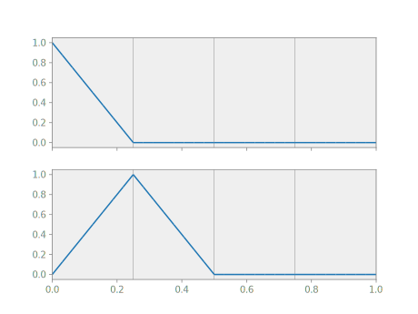
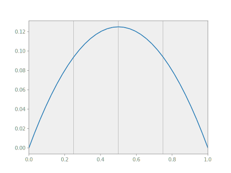
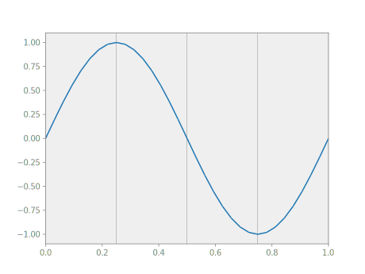
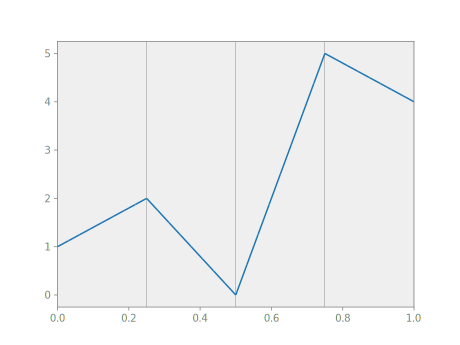

Functions
A function in Nutils is a mapping from a topology onto an n-dimensional
array, and comes in the form of a functions: nutils.function.Array object. It
is not to be confused with Python's own function objects, which operate on the
space of general Python objects. Two examples of Nutils functions have already
made the scene: the geometry geom, as returned by nutils.mesh.rectilinear,
and the bases generated by Topology.basis(). Though seemingly different,
these two constructs are members of the same class and in fact fully
interoperable.
The nutils.function.Array functions behave very much like numpy.ndarray
objects: the functions have a nutils.function.Array.shape,
nutils.function.Array.ndim and a nutils.function.Array.dtype:
geom.shape
# (1,)
basis.shape
# (5,)
geom.ndim
# 1
geom.dtype
# <class 'float'>
The functions support numpy-style indexing. For example, to get the first
element of the geometry geom you can write geom[0] and to select the first
two basis functions you can write
myplot(topo, geom, basis[:2])

The usual unary and binary operators are available:
myplot(topo, geom, geom[0]*(1-geom[0])/2)

Several trigonometric functions are defined in the nutils.function module.
An example with a sine function:
myplot(topo, geom, numpy.sin(2*geom[0]*numpy.pi))

The dot product is available via the '@' operator. To contract the basis with an arbitrary coefficient vector:
myplot(topo, geom, basis @ [1,2,0,5,4])

Recalling the definition of the discrete solution, the above is precisely the way to evaluate the resulting function. What remains now is to establish the coefficients for which this function solves the Laplace problem.
Arguments
A discrete model is often written in terms of (vectors of) unknowns. In Nutils,
unknowns are represented by functions of type nutils.function.Argument, which
have a known shape but undefined contents. Every argument has a name to
identify it, which cannot be reused for different arguments in the same
expression.
The discrete solution can now be
written as an inner product with a basis, with the vector of unknowns
represented by the argument 'u':
from nutils.function import Argument
u = basis @ Argument('u', basis.shape)
Since it is slightly tedious to create an argument that has a matching shape to an existing basis, the function module provides a convenience function that does the work for you.
from nutils.function import field
u = field('u', basis)
Moreover, as it is rarely necessary to manipulate a basis directly, the topology object adds a layer of convenience that creates the basis, contracts it with an argument, and returns only the result. This is the form that we will most often encounter:
u = topo.field('u', btype='spline', degree=1)
If a function depends on one or more arguments, then their values must be specified at evaluation time. However we cannot demonstrate that yet for the discrete solution defined here as it still requires a specification of the relevant topological points. This will be the subject of integrals.
What we can do is take derivatives with respect to arguments. The derivative appends the argument shape to that of the original function. Here we take the derivative of u, the function, with respect to 'u', the argument, to effectively extract the basis:
basis = u.derivative('u')